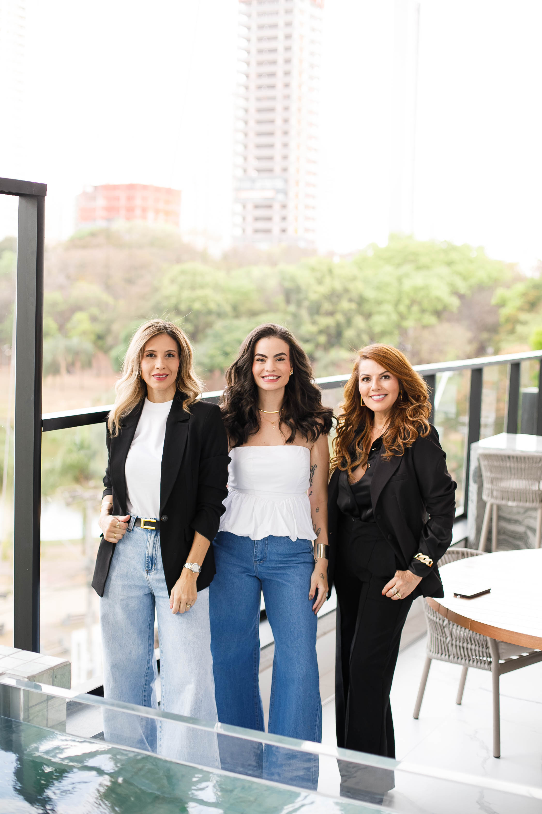
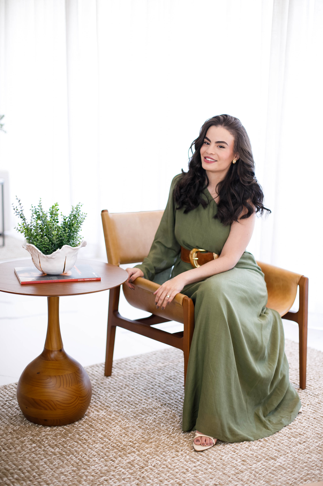

Conexão
Relações genuínas que geram pertencimento, parcerias e novas possibilidades.
Comunidade feminina • Goiânia
Um espaço criado para mulheres que desejam crescer, ampliar sua visão e construir relações que fazem sentido.

A nossa história
A Tríade nasceu da união de três mulheres, em fases diferentes da vida, mas com o mesmo propósito: criar um espaço onde outras mulheres pudessem se encontrar de verdade.
Aqui, conexões viram oportunidades. Conversas despertam coragem. E mulheres descobrem que crescer acompanhada torna o caminho mais potente.
“Quando uma mulher encontra o ambiente certo, ela não precisa diminuir a própria potência para pertencer.”
O que nos move
Relações genuínas que geram pertencimento, parcerias e novas possibilidades.
Conteúdo e experiências para fortalecer a mulher por trás da empresária.
Um ambiente estratégico para apresentar marcas, ampliar autoridade e prosperar.
As idealizadoras
Lívia, Lia e Cris uniram experiências, personalidades e momentos de vida diferentes para criar uma comunidade que acolhe, provoca movimento e abre caminhos.

Empresária, mãe e líder por natureza. Com uma trajetória construída no varejo, na gestão de equipes e no desenvolvimento de negócios, leva para a Tríade visão comercial, estratégia e coragem para transformar ideias em movimento.
Uma mulher de comunicação marcante e grande capacidade de conexão. Na Tríade, transforma encontros em experiências acolhedoras e aproxima pessoas, marcas e oportunidades com leveza e intenção.
Empresária com uma presença firme, elegante e acolhedora. Soma à Tríade maturidade, percepção estratégica e a capacidade de construir relações consistentes, unindo experiência de vida e visão de negócios.
Experiências Tríade
Cada formato nasce para provocar novas conversas, conexões e movimentos.
Networking, conteúdo e trocas entre mulheres que desejam crescer.
Grupos menores, conversas profundas e desenvolvimento.
Marcas, experiências e oportunidades em um só ambiente.
Experiências criadas para diferentes momentos e públicos.
Para marcas e patrocinadores
A Tríade aproxima marcas de uma comunidade ativa e cria experiências que geram presença, relacionamento e lembrança.
Conhecer possibilidades de parceria ↗Faça parte
Escolha como você deseja se conectar com a Tríade.